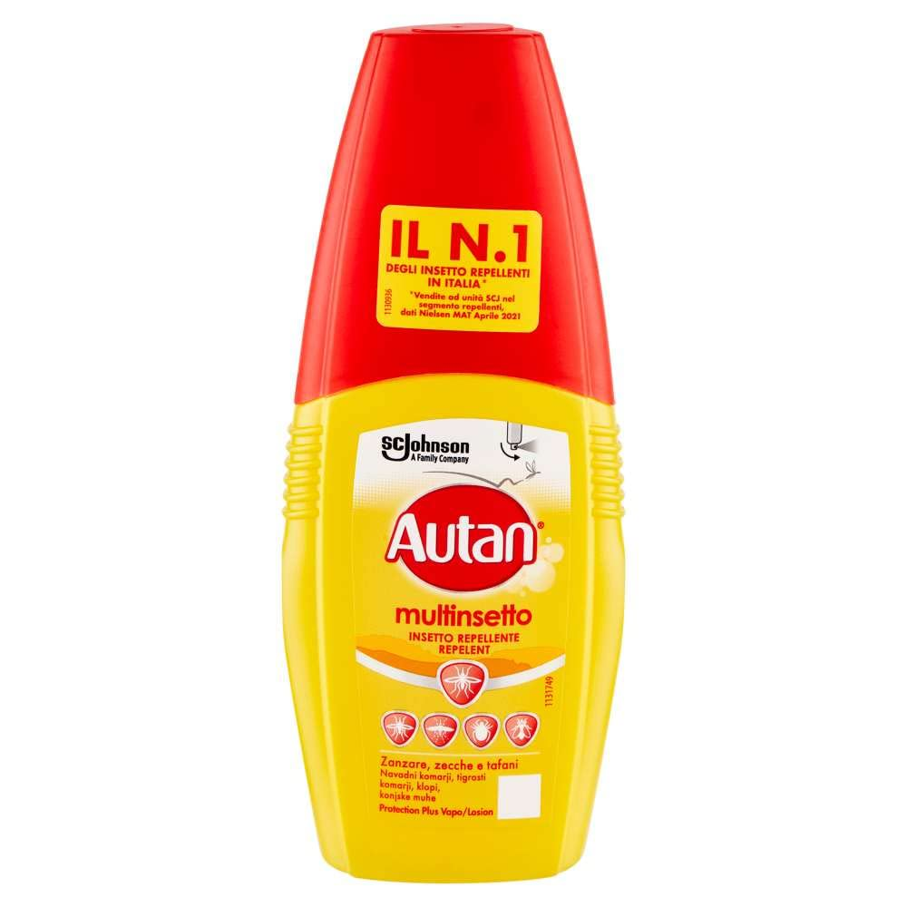
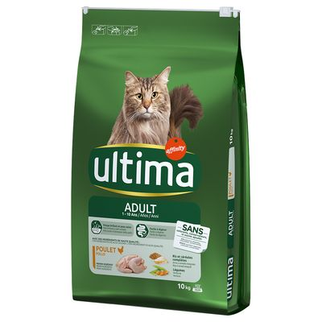
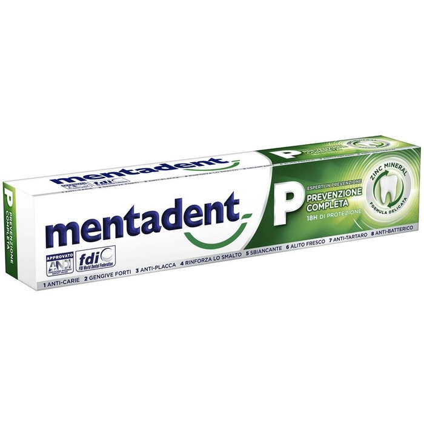
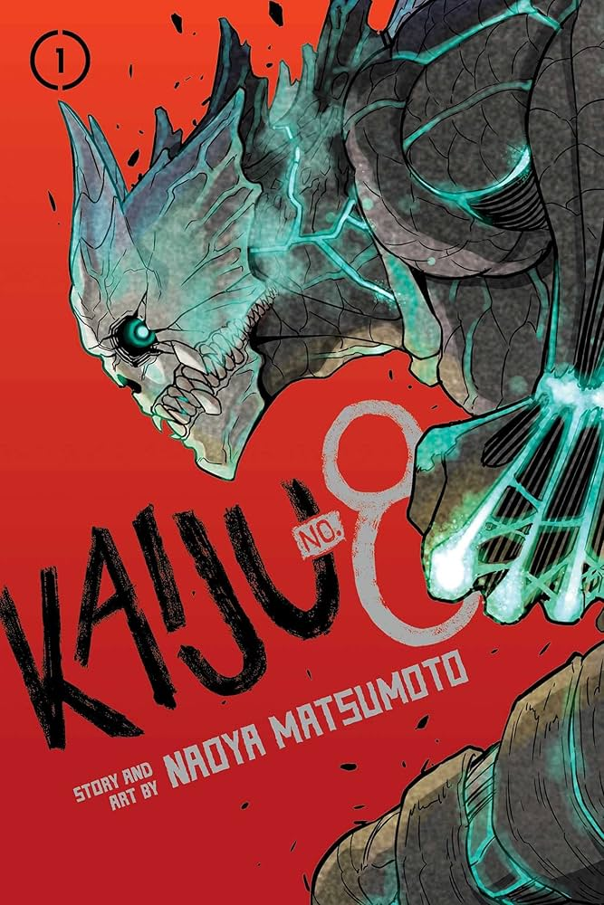

AutanLo spray Autan Multi Insect consente un rapido e semplice spruzzo sul corpo grazie alla sua pompa utilizzabile. Lo spray Autan Multi Insect è una composizione chiara, rinfrescante e rinfrescante senza coloranti e conservanti. Il prodotto contiene il 20% di icaridina e protegge fino a 8 ore dalle zanzare, fino a 6 ore da zanzare tigre, fino a 5 ore dalle mosche e fino a 4 ore dalle zecche. 7,75€ Compra |
Ultima Cibo per Gatti Adulti con Pollo, 440gUltima Adult è una ricetta adattata alle necessità nutrizionali del tuo gatto adulto, con cui lo aiuterai a mantenersi sano, con un pelo lucente e una pelle in salute. Con ingredienti di alta qualità per una digestione facile. Indicazioni Adulti, Salute della cute e del mantello Ingredienti Pollo (17%) mais integrale proteina di mais proteine disidratate di maiale frumento integrale (10%) proteine disidratate di pollame piselli disidratati (5%) grasso di origine animale farina di mais orzo integrale (4%) proteine animali idrolizzate proteina di soia sostanze minerali carota disidratata (0,5%, pari al 4% di carota fresca). 1,99€ Compra |
Findigit Cuscino Cervicale in Memory FoamSupporta la testa e il collo per offrire una notte confortevole. IMPORTANTE: All'arrivo del tuo nuovo cuscino da letto, rimuovi l'imballaggio e attendi 24 - 48 ore affinché il cuscino riprenda la sua forma originale. Se il cuscino non può tornare alla sua forma originale, contatta direttamente il venditore. 26,00€ Compra |
|---|---|---|
Mentadent - Dentifricio Prevenzione CompletaProteggere dalla carie Rafforzare le gengive Fornisce un effetto antiplacca fino a 18 ore Rafforza lo smalto Ripristinare il bianco naturale dei denti 27,53€ Compra |
MM Kaiju 8 nº 01Il Giappone ha il tasso più alto di attacchi di Kaiju al mondo. I Kaiju sconvolgono continuamente e senza pietà la vita quotidiana delle persone. Kafka Hibino, che ha sempre desiderato entrare nelle Forze di Difesa, attualmente lavora come pulitore di cadaveri di Kaiju. 1,95€ Compra |